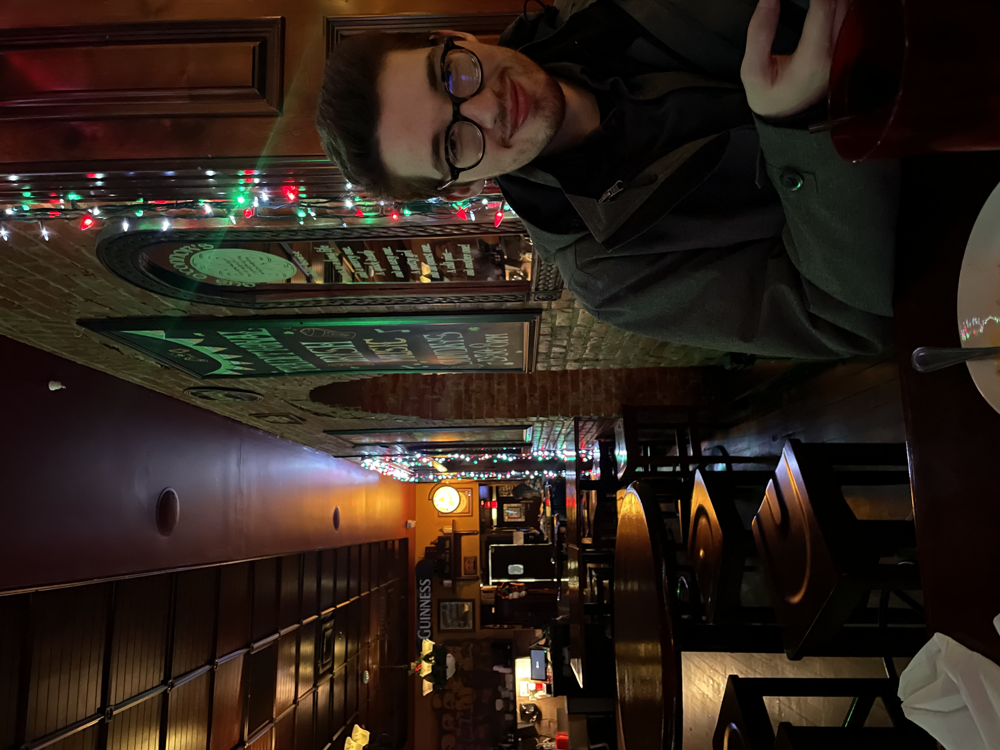

"The mark of an educated mind is to entertain something without accepting
it" - Aristotle
Hello, I'm Scott Lusader, and I am a Senior majoring in Actuarial
Science with a previous degree in Biochemistry at GVSU. I am interested
in financial markets, organic synthesis, integration, and linear
regression analysis and I am always learning new subjects to teach. I
work at the tutoring center as a Supplemental Instruction Leader and a
walk-in tutor for Organic Chemistry, Calculus, Statistics, and
Economics. As a result of my wide range of interests, I am pursuing a
career as an actuary.
To know more about me, check out
my resume
and
my fun facts.